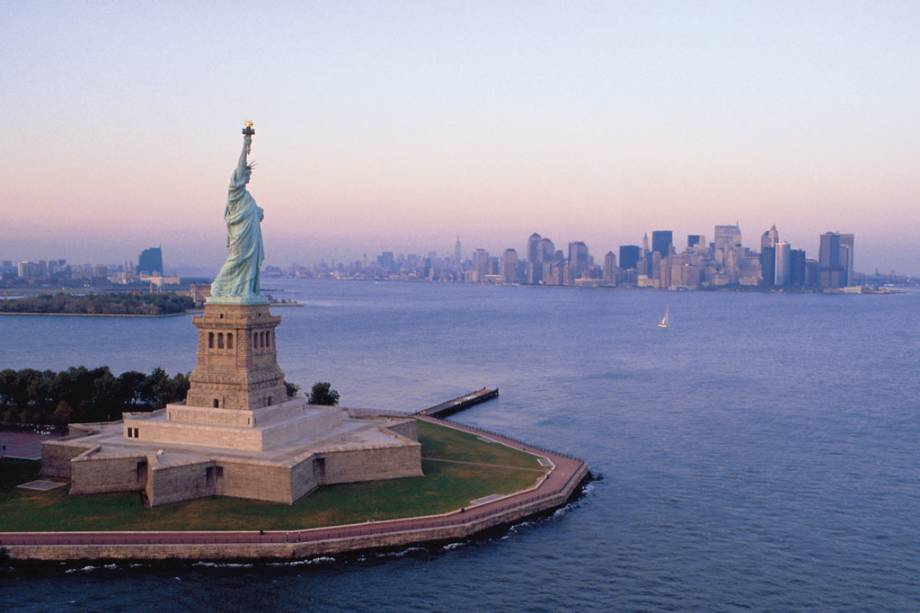
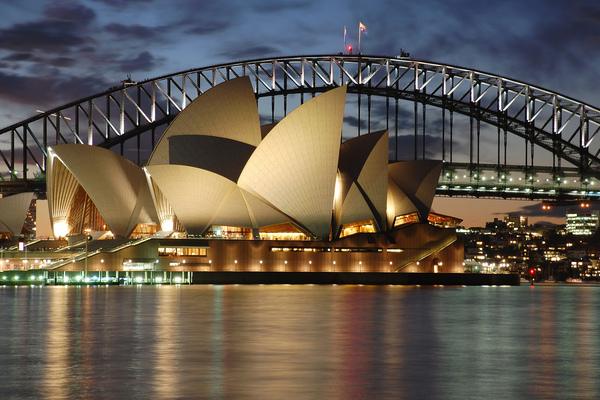
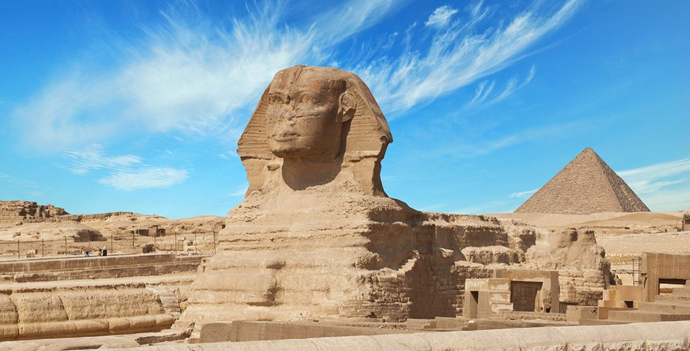

A sua Melhor Viagem


- 
- 
A magia Disney
No dia 1º de Outubro de 1971, o Walt Disney World abriu para o mundo a inauguração de um tema colossal em Orlando na Flórida, o maior e mais famoso do mundo, um castelo gigante de conto de fadas situado bem no coração do Magic Kingdom.
O castelo brilhante logo se tornaria um símbolo emblemático da Disney e sua história.
O Castelo da Cinderela está situado na entrada da Fantasyland no parque Magic Kingdom, do Disney World.
O Castelo da Cinderella é um espetáculo mágico que nunca deixa de surpreender os seus espectadores, o castelo é tão icônico, que suas férias na Disney não estariam completas sem uma visita a esse vislumbrante edifício.
A mais famosa das Pirâmides.

As lendas e mitos que cercam as pirâmides atraem muitas pessoas e reforçam o lado misterioso que cerca a antiga cultura egípcia.
Esse mistério começou a ser instigado com a febre de escavações e expedições arqueológicas que tomaram conta das antigas cidades egípcias.
Em 1923, um grupo de pesquisadores comemorou a descoberta da tumba de um faraó com mais de 3000 anos de existência.
Este faraó era o lendário Tutancamon, que teve sua múmia encontrada ao lado de artefatos em ouro, bacias cheias de grãos e uma inscrição egípcia
prometendo que a morte afligiria todo aquele que viesse a perturbar o sono do faraó. Mesmo com seu tom ameaçador, aquele e outros avisos não foram
capazes de sanar a cobiça dos saqueadores de tumbas que violaram o descanso de diversas outras múmias. Será que a maldição atingiria aqueles que ignoravam
o silencioso aviso?
Perfil do Autor
Mr.Cat,autor desse blog,vive em Ohio desde os seus 23 anos.
Passou a escrever blogs de viagem pois passou toda a sua infância dentro de um trailer viajando com sua família.
Desde então seus diários de viagem aos poucos se tranformaram em blogs , tornando viajar sua maior paixão.